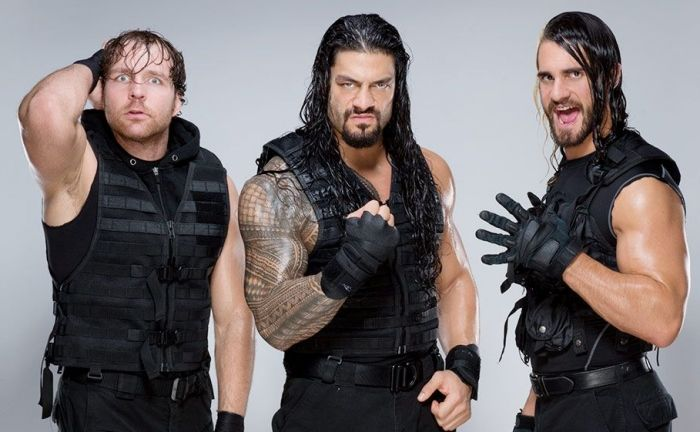
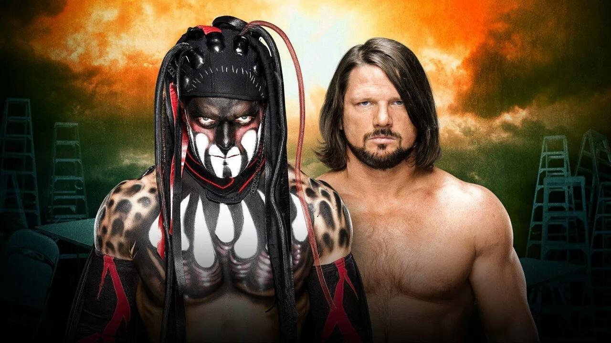
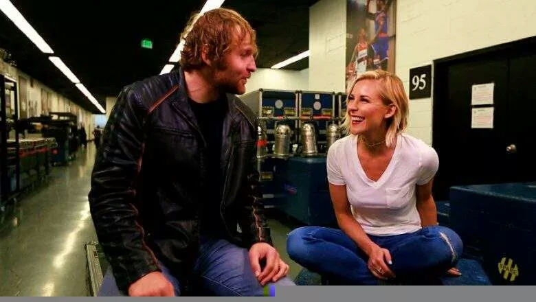

|  | 2013年的1月2日，罗林斯正式加入The Shield（圣盾）。1月7日，罗林斯在一场无DQ NXT头衔赛迎接大E(Big E)的挑战，由于圣盾成员在后台遭到袭击，结果罗林斯击败罗林斯成为第二任的NXT冠军。 2012年的11月18日，罗林斯、迪安·安布罗斯、罗曼·雷恩斯现身在《强者生存》（Survivor Series），并袭击了当时正在参加三重威胁WWE冠军赛的Ryback，让CM朋克成功压制约翰·塞纳卫冕冠军腰带。这个三人小组称自己为“The Shield”，并指自己是出来捍卫正义的。接下来圣盾军团再接再厉，袭击了兰迪·奥顿、克里斯·杰里科、洛克等巨星。 接下来，两次击败世界冠军次数加起来超越30次的WWE进化军团（Evolution，由HHH、兰迪·奥顿、巴蒂斯塔组成）。 进化军团输给了圣盾，就在2014年的6月2日的RAW，巴蒂斯塔怪责HHH没给自己挑战WWE世界冠军的机会而再次离开WWE，HHH则告诉巴蒂斯塔将会有B计划，结果当晚，一直充当和事佬角色的罗林斯突然背叛圣盾，圣盾正式解散。 |
| 强森的父亲和祖父都是世界职业摔跤界屡获殊荣的名人。当他二十出头时，强森搬到了宾夕法尼亚州开始专注于美式橄榄球运动。他在迈阿密大学时加入了迈阿密大学的美式橄榄球队，并在1991年赢得了他第一个全国冠军。之后他又参加了92、95两届全国锦标赛，并在95届对战内布拉斯加大学争夺联邦快递橙碗比赛后结束了美式橄榄球生涯 。
强森26岁开始参加世界职业摔角联盟。2000年，他的自传《巨石如此说》荣登纽约时报畅销书排行榜；同时在他的美国职业摔角集锦CD中，收录了与其他艺术家合作的歌曲，包括格莱美奖得主Wyclef Jean。 | |
|  | 芬·巴洛尔（Finn Bálor）是一名爱尔兰籍的职业摔角手，曾用擂台名为普林斯·戴维特（Prince Davitt）。与2014年7月29日正式签约WWE发展联盟NXT。
芬·巴洛尔将他出色的天赋带进了NXT，这也就意味着他带给黄绳内对手的唯一的事就是：痛苦。 尽管AJ早已火遍全球，但是始终没有正式的来到过WWE。2016年一月初经过一周的宣传，他在2016年皇家大战上完成了他期待许久的WWE出场，当“现象级”A.J. Styles一踏上擂台与罗曼·雷恩斯、大秀哥、凯文·欧文斯等明星展开混战，就受到WWE粉丝的热烈的欢呼，其在WWE商店里的周边产品也瞬间销售一空。次日晚上，A.J.Styles在RAW完成首秀，与Chris Jericho进行了一场精妙绝伦的比赛，这场比赛是高能不断的，最后A.J.Styles实用技巧性压制Y2J赢得比赛。 AJStyles在WWE未来是没人能猜得到的，但是，有一件事可以保证的是他将会成为传奇 |
|  | 迪安·安布罗斯，本名Jonathan Good，是一名美国职业摔角手。现为WWE（世界摔角娱乐）工作。2004年到2011年之间，迪安以Jon Moxley的身份在Independent Circuit声名鹊起。他效力过很多联盟，包括FIP，CZW，ROH，Evolve和美国的Dragon Gate。曾赢得过FIP世界重量级冠军一次，CZW世界重量级冠军两次。 2011年，迪安开始在WWE的发展联盟FCW（佛罗里达冠军摔角）发展，2012年作为圣盾的一员成为WWE主要角色，其他两位成员分别是塞斯·罗林斯和罗曼·雷恩斯。迪安在WWE赢得过一次公文包比赛，两次洲际冠军，一次全美冠军（他保持的351天的全美冠军纪录是历史上保持冠军时间第三长的，全美冠军历史上是最长的)，一次WWE冠军。一次Raw双打冠军搭配为赛斯罗林斯 |